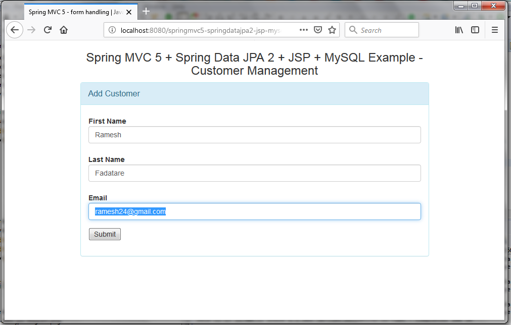
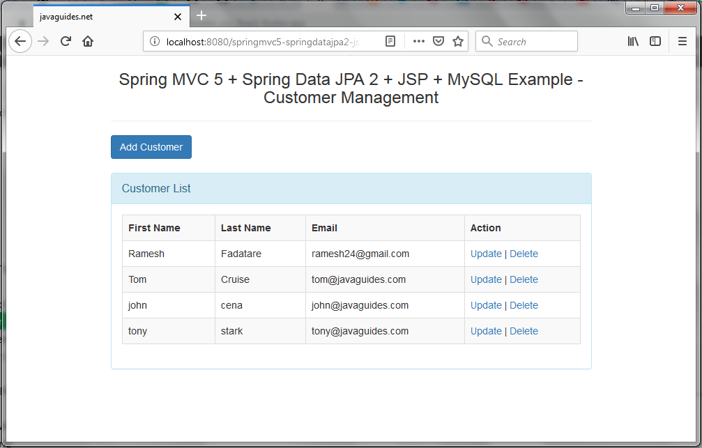

Spring MVC + Spring Data JPA + Hibernate + JSP + MySQL Tutorial
In this tutorial, we are going to build a simple web application using Spring MVC, Spring Data JPA, Hibernate, JSP, and MySQL. This example will help you create a CRUD (Create, Read, Update, Delete) application for managing customers.
In this tutorial, we will use a Java-based spring configuration to configure Spring MVC 5, Spring Data JPA, Hibernate 5 and MySQL, etc.
Let's have a technology overview of the tools and frameworks used in the tutorial for building a CRUD application.
1. Spring MVC
Spring MVC is a web framework that builds on the core Spring functionality. It is used to create web applications that follow the Model-View-Controller (MVC) design pattern.
With Spring MVC, you can build flexible and loosely-coupled web applications with ease.
Model: Represents the data and the business rules of the application.
View: Responsible for rendering the model data and producing the final client-visible output.
Controller: user requests, manipulates the model, and returns the view to the client.
2. Spring Data JPA
Spring Data JPA (Java Persistence API) simplifies data access within the Spring application by providing repository support for various data technologies. It provides a way to reduce the boilerplate code required to implement data access layers for various persistence stores.
Spring Data JPA internally uses Hibernate as a JPA provider.
3. Hibernate
Hibernate is an Object-Relational Mapping (ORM) library for Java, that provides a framework for mapping an object-oriented domain model to a traditional relational database. It allows you to manipulate database records using Java objects, abstracting the underlying SQL commands.
4. JSP (JavaServer Pages)
JSP is a Java-based technology that allows the insertion of Java code directly into the HTML code. It enables the creation of dynamic, user-driven web pages. In this tutorial, JSP is used to create the front-end views that the end-users interact with.
5. MySQL
MySQL is one of the world's most popular open-source relational database management systems (RDBMS). It uses a client-server model and SQL (Structured Query Language) to manage its database. In this tutorial, MySQL is used to store and retrieve customer data.
6. Maven
Maven is a build automation tool used primarily for Java projects. It simplifies the build process by defining project dependencies, the build lifecycle goals, plugins, and other aspects in a pom.xml file.
7. Tomcat
Apache Tomcat is an open-source implementation of the Java Servlet, JavaServer Pages, and Java Expression Language technologies. It's a web server and servlet container that's used to serve Java applications.
1. Create Maven Web Application
Let's create a Maven-based web application either using a command line or from Eclipse IDE.
- Use the Guide to Create Maven Web Application link to create a Maven project using a command line.
- Use Create Maven Web Application using Eclipse IDE link to create a maven web application using IDE Eclipse.
Once you created the maven web application, refer to the pom.xml file jar dependencies.
If you are new to maven then learn maven on Apache Maven Tutorial
2. Add Dependencies - pom.xml File
<properties>
<failOnMissingWebXml>false</failOnMissingWebXml>
<spring.version>5.1.0.RELEASE</spring.version>
<hibernate.version>5.2.17.Final</hibernate.version>
<hibernate.validator>5.4.1.Final</hibernate.validator>
<c3p0.version>0.9.5.2</c3p0.version>
<jstl.version>1.2.1</jstl.version>
<tld.version>1.1.2</tld.version>
<servlets.version>3.1.0</servlets.version>
<jsp.version>2.3.1</jsp.version>
<log4j.version>1.2.17</log4j.version>
</properties>
<dependencies>
<!-- Spring MVC Dependency -->
<dependency>
<groupId>org.springframework</groupId>
<artifactId>spring-webmvc</artifactId>
<version>${spring.version}</version>
<exclusions>
<exclusion>
<groupId>commons-logging</groupId>
<artifactId>commons-logging</artifactId>
</exclusion>
</exclusions>
</dependency>
<!-- Spring ORM -->
<dependency>
<groupId>org.springframework</groupId>
<artifactId>spring-orm</artifactId>
<version>${spring.version}</version>
</dependency>
<dependency>
<groupId>org.hibernate</groupId>
<artifactId>hibernate-entitymanager</artifactId>
<version>${hibernate.version}</version>
</dependency>
<!-- Hibernate Validator -->
<dependency>
<groupId>org.hibernate</groupId>
<artifactId>hibernate-validator</artifactId>
<version>${hibernate.validator}</version>
</dependency>
<!-- https://mvnrepository.com/artifact/org.springframework.data/spring-data-jpa -->
<dependency>
<groupId>org.springframework.data</groupId>
<artifactId>spring-data-jpa</artifactId>
<version>2.1.0.RELEASE</version>
</dependency>
<!-- JSTL Dependency -->
<dependency>
<groupId>javax.servlet.jsp.jstl</groupId>
<artifactId>javax.servlet.jsp.jstl-api</artifactId>
<version>${jstl.version}</version>
</dependency>
<dependency>
<groupId>taglibs</groupId>
<artifactId>standard</artifactId>
<version>${tld.version}</version>
</dependency>
<!-- Servlet Dependency -->
<dependency>
<groupId>javax.servlet</groupId>
<artifactId>javax.servlet-api</artifactId>
<version>${servlets.version}</version>
<scope>provided</scope>
</dependency>
<!-- JSP Dependency -->
<dependency>
<groupId>javax.servlet.jsp</groupId>
<artifactId>javax.servlet.jsp-api</artifactId>
<version>${jsp.version}</version>
<scope>provided</scope>
</dependency>
<dependency>
<groupId>mysql</groupId>
<artifactId>mysql-connector-java</artifactId>
<version>5.1.47</version>
</dependency>
<!-- logging -->
<dependency>
<groupId>org.slf4j</groupId>
<artifactId>jcl-over-slf4j</artifactId>
<version>1.7.20</version>
</dependency>
<dependency>
<groupId>ch.qos.logback</groupId>
<artifactId>logback-classic</artifactId>
<version>1.1.7</version>
</dependency>
</dependencies>
<build>
<plugins>
<plugin>
<artifactId>maven-compiler-plugin</artifactId>
<version>3.5.1</version>
<configuration>
<source>1.8</source>
<target>1.8</target>
</configuration>
</plugin>
</plugins>
</build>
3. Project Structure
Standard project structure for your reference:
.PNG)
4. AppInitializer - Register a DispatcherServlet using Java-based Spring configuration
In Spring MVC, the DispatcherServlet must be defined and mapped to handle
all incoming requests, and this can
be accomplished through either Java configuration or web.xml configuration.
If you're working in a Servlet 3.0 or higher environment, the
AbstractAnnotationConfigDispatcherServletInitializer class provides a
programmatic way to register and
initialize the DispatcherServlet, as described below.
public class AppInitializer extends AbstractAnnotationConfigDispatcherServletInitializer {
@Override
protected Class << ? > [] getRootConfigClasses() {
return new Class[] {
PersistenceJPAConfig.class
};
//return null;
}
@Override
protected Class << ? > [] getServletConfigClasses() {
return new Class[] {
WebMvcConfig.class
};
}
@Override
protected String[] getServletMappings() {
return new String[] {
"/"
};
}
}
5. PersistenceJPAConfig - Spring Data JPA and Hibernate Configuration using Java-based Spring configuration
Database Configuration - database.properties:
# jdbc.X
jdbc.driverClassName=com.mysql.jdbc.Driver
jdbc.url=jdbc:mysql://localhost:3306/demo?useSSL=false
jdbc.user=root
jdbc.pass=root
# hibernate.X
hibernate.dialect=org.hibernate.dialect.MySQL5Dialect
hibernate.show_sql=false
hibernate.hbm2ddl.auto=create-drop
hibernate.cache.use_second_level_cache=false
hibernate.cache.use_query_cache=false
PersistenceJPAConfig.java
@Configuration
@EnableTransactionManagement
@PropertySource({
"classpath:database.properties"
})
@ComponentScan({
"net.javaguides.springmvc"
})
@EnableJpaRepositories(basePackages = "net.javaguides.springmvc.repository")
public class PersistenceJPAConfig {
@Autowired
private Environment env;
public PersistenceJPAConfig() {
super();
}
@Bean
public LocalContainerEntityManagerFactoryBean entityManagerFactory() {
final LocalContainerEntityManagerFactoryBean entityManagerFactoryBean = new LocalContainerEntityManagerFactoryBean();
entityManagerFactoryBean.setDataSource(dataSource());
entityManagerFactoryBean.setPackagesToScan(new String[] {
"net.javaguides.springmvc.entity"
});
final HibernateJpaVendorAdapter vendorAdapter = new HibernateJpaVendorAdapter();
entityManagerFactoryBean.setJpaVendorAdapter(vendorAdapter);
entityManagerFactoryBean.setJpaProperties(additionalProperties());
return entityManagerFactoryBean;
}
final Properties additionalProperties() {
final Properties hibernateProperties = new Properties();
hibernateProperties.setProperty("hibernate.hbm2ddl.auto", env.getProperty("hibernate.hbm2ddl.auto"));
hibernateProperties.setProperty("hibernate.dialect", env.getProperty("hibernate.dialect"));
hibernateProperties.setProperty("hibernate.cache.use_second_level_cache", env.getProperty("hibernate.cache.use_second_level_cache"));
hibernateProperties.setProperty("hibernate.cache.use_query_cache", env.getProperty("hibernate.cache.use_query_cache"));
// hibernateProperties.setProperty("hibernate.globally_quoted_identifiers", "true");
return hibernateProperties;
}
@Bean
public DataSource dataSource() {
final DriverManagerDataSource dataSource = new DriverManagerDataSource();
dataSource.setDriverClassName(env.getProperty("jdbc.driverClassName"));
dataSource.setUrl(env.getProperty("jdbc.url"));
dataSource.setUsername(env.getProperty("jdbc.user"));
dataSource.setPassword(env.getProperty("jdbc.pass"));
return dataSource;
}
@Bean
public PlatformTransactionManager transactionManager(final EntityManagerFactory emf) {
final JpaTransactionManager transactionManager = new JpaTransactionManager();
transactionManager.setEntityManagerFactory(emf);
return transactionManager;
}
@Bean
public PersistenceExceptionTranslationPostProcessor exceptionTranslation() {
return new PersistenceExceptionTranslationPostProcessor();
}
}
The @EnableJpaRepositories annotation plays a crucial role in enabling the
use of JPA repositories, and the
net.javaguides.springmvc.repository package will be specifically scanned to
locate these repositories.
Within the entityManagerFactory bean, it's been configured to use Hibernate
as the JPA implementation.
Additionally, the @EnableJpaRepositories annotation activates Spring's
annotation-driven transaction
management feature. This is analogous to the transaction support that's available in Spring's tx:* XML
namespace, providing a way to manage transactions declaratively within your application.
6. WebMvcConfig - Spring MVC Bean Configuration using Java-based Spring configuration
Create an MVCConfig class and the following code:
@Configuration
@EnableWebMvc
@ComponentScan(basePackages = {
"net.javaguides.springmvc.controller"
})
public class WebMvcConfig implements WebMvcConfigurer {
@Bean
public InternalResourceViewResolver resolver() {
InternalResourceViewResolver resolver = new InternalResourceViewResolver();
resolver.setViewClass(JstlView.class);
resolver.setPrefix("/WEB-INF/views/");
resolver.setSuffix(".jsp");
return resolver;
}
@Override
public void addResourceHandlers(ResourceHandlerRegistry registry) {
registry
.addResourceHandler("/resources/**")
.addResourceLocations("/resources/");
}
}
7. JPA Entity - Customer.java
@Entity
@Table(name = "customer")
public class Customer {
@Id
@GeneratedValue(strategy = GenerationType.IDENTITY)
@Column(name = "id")
private int id;
@Column(name = "first_name")
private String firstName;
@Column(name = "last_name")
private String lastName;
@Column(name = "email")
private String email;
// getter/setter methods
}
8. Spring MVC Controller Class - CustomerController.java
Let's create CustomerController Class with CRUD Customer operations.
@Controller
@RequestMapping("/customer")
public class CustomerController {
private static final Logger LOG = LoggerFactory.getLogger(CustomerController.class);
@Autowired
private CustomerService customerService;
@GetMapping("/list")
public String listCustomers(Model theModel) {
List < Customer > theCustomers = customerService.getCustomers();
theModel.addAttribute("customers", theCustomers);
return "list-customers";
}
@GetMapping("/showForm")
public String showFormForAdd(Model theModel) {
LOG.debug("inside show customer-form handler method");
Customer theCustomer = new Customer();
theModel.addAttribute("customer", theCustomer);
return "customer-form";
}
@PostMapping("/saveCustomer")
public String saveCustomer(@ModelAttribute("customer") Customer theCustomer) {
customerService.saveCustomer(theCustomer);
return "redirect:/customer/list";
}
@GetMapping("/updateForm")
public String showFormForUpdate(@RequestParam("customerId") int theId,
Model theModel) throws ResourceNotFoundException {
Customer theCustomer = customerService.getCustomer(theId);
theModel.addAttribute("customer", theCustomer);
return "customer-form";
}
@GetMapping("/delete")
public String deleteCustomer(@RequestParam("customerId") int theId) throws ResourceNotFoundException {
customerService.deleteCustomer(theId);
return "redirect:/customer/list";
}
}
9. Service Layer - CustomerService.java and CustomerServiceImpl.java
CustomerService.java
Let's create CustomerService class with Customer service operations.
package net.javaguides.springmvc.service;
import java.util.List;
import net.javaguides.springmvc.entity.Customer;
import net.javaguides.springmvc.exception.ResourceNotFoundException;
public interface CustomerService {
public List < Customer > getCustomers();
public void saveCustomer(Customer theCustomer);
public Customer getCustomer(int theId) throws ResourceNotFoundException;
public void deleteCustomer(int theId) throws ResourceNotFoundException;
}
CustomerServiceImpl.java
package net.javaguides.springmvc.service;
import java.util.List;
import org.springframework.beans.factory.annotation.Autowired;
import org.springframework.stereotype.Service;
import org.springframework.transaction.annotation.Transactional;
import net.javaguides.springmvc.entity.Customer;
import net.javaguides.springmvc.exception.ResourceNotFoundException;
import net.javaguides.springmvc.repository.CustomerRepository;
@Service
public class CustomerServiceImpl implements CustomerService {
@Autowired
private CustomerRepository customerRepository;
@Override
@Transactional
public List < Customer > getCustomers() {
return customerRepository.findAll();
}
@Override
@Transactional
public void saveCustomer(Customer theCustomer) {
customerRepository.save(theCustomer);
}
@Override
@Transactional
public Customer getCustomer(int id) throws ResourceNotFoundException {
return customerRepository.findById(id).orElseThrow(
() - > new ResourceNotFoundException(id));
}
@Override
@Transactional
public void deleteCustomer(int theId) {
customerRepository.deleteById(theId);
}
}
10. Spring Data JPA Repository - CustomerRepository.java
package net.javaguides.springmvc.repository;
import org.springframework.data.jpa.repository.JpaRepository;
import org.springframework.stereotype.Repository;
import net.javaguides.springmvc.entity.Customer;
@Repository("customerRepository")
public interface CustomerRepository extends JpaRepository<Customer, Integer> {
}
11. Custom Exception - ResourceNotFoundException.java
package net.javaguides.springmvc.exception;
public class ResourceNotFoundException extends Exception {
private static final long serialVersionUID = 1 L;
public ResourceNotFoundException(Object resourId) {
super(resourId != null ? resourId.toString() : null);
}
}
12. JSP Views - customer-form.jsp and list-customers.jsp
customer-form.jsp
<%@ page language="java" contentType="text/html; charset=ISO-8859-1"
pageEncoding="ISO-8859-1"%>
<%@ taglib uri="http://www.springframework.org/tags/form" prefix="form"%>
<%@taglib prefix="c" uri="http://java.sun.com/jsp/jstl/core"%>
<!DOCTYPE html>
<html>
<head>
<meta charset="ISO-8859-1">
<title>Spring MVC 5 - form handling | Java Guides</title>
<link href="<c:url value="/resources/css/bootstrap.min.css" />"
rel="stylesheet">
<script src="<c:url value="/resources/js/jquery-1.11.1.min.js" />"></script>
<script src="<c:url value="/resources/js/bootstrap.min.js" />"></script>
</head>
<body>
<div class="container">
<div class="col-md-offset-2 col-md-7">
<h3 class="text-center">Spring MVC 5 + Spring Data JPA 2 + JSP + MySQL
Example - Customer Management</h3>
<div class="panel panel-info">
<div class="panel-heading">
<div class="panel-title">Add Customer</div>
</div>
<div class="panel-body">
<form:form action="saveCustomer" cssClass="form-horizontal"
method="post" modelAttribute="customer">
<!-- need to associate this data with customer id -->
<form:hidden path="id" />
<div class="form-group">
<label for="firstname" class="col-md-3 control-label">First
Name</label>
<div class="col-md-9">
<form:input path="firstName" cssClass="form-control" />
</div>
</div>
<div class="form-group">
<label for="lastname" class="col-md-3 control-label">Last
Name</label>
<div class="col-md-9">
<form:input path="lastName" cssClass="form-control" />
</div>
</div>
<div class="form-group">
<label for="email" class="col-md-3 control-label">Email</label>
<div class="col-md-9">
<form:input path="email" cssClass="form-control" />
</div>
</div>
<div class="form-group">
<!-- Button -->
<div class="col-md-offset-3 col-md-9">
<form:button cssClass="btn btn-primary">Submit</form:button>
</div>
</div>
</form:form>
</div>
</div>
</div>
</div>
</body>
</html>
list-customers.jsp
<%@ page language="java" contentType="text/html; charset=ISO-8859-1"
pageEncoding="ISO-8859-1"%>
<%@ taglib uri="http://java.sun.com/jsp/jstl/core" prefix="c"%>
<!DOCTYPE html>
<html>
<head>
<meta http-equiv="Content-Type" content="text/html; charset=ISO-8859-1">
<title>javaguides.net</title>
<link href="<c:url value="/resources/css/bootstrap.min.css" />"
rel="stylesheet">
<%@ page isELIgnored="false"%>
<script src="<c:url value="/resources/js/jquery-1.11.1.min.js" />"></script>
<script src="<c:url value="/resources/js/bootstrap.min.js" />"></script>
</head>
<body>
<div class="container">
<div class="col-md-offset-1 col-md-10">
<h3 class="text-center">Spring MVC 5 + Spring Data JPA 2 + JSP +
MySQL Example - Customer Management</h3>
<hr />
<input type="button" value="Add Customer"
onclick="window.location.href='showForm'; return false;"
class="btn btn-primary" /> <br />
<br />
<div class="panel panel-info">
<div class="panel-heading">
<div class="panel-title">Customer List</div>
</div>
<div class="panel-body">
<table class="table table-striped table-bordered">
<tr>
<th>First Name</th>
<th>Last Name</th>
<th>Email</th>
<th>Action</th>
</tr>
<!-- loop over and print our customers -->
<c:forEach var="tempCustomer" items="${customers}">
<!-- construct an "update" link with customer id -->
<c:url var="updateLink" value="/customer/updateForm">
<c:param name="customerId" value="${tempCustomer.id}" />
</c:url>
<!-- construct an "delete" link with customer id -->
<c:url var="deleteLink" value="/customer/delete">
<c:param name="customerId" value="${tempCustomer.id}" />
</c:url>
<tr>
<td>${tempCustomer.firstName}</td>
<td>${tempCustomer.lastName}</td>
<td>${tempCustomer.email}</td>
<td>
<!-- display the update link --> <a href="${updateLink}">Update</a>
| <a href="${deleteLink}"
onclick="if (!(confirm('Are you sure you want to delete this customer?'))) return false">Delete</a>
</td>
</tr>
</c:forEach>
</table>
</div>
</div>
</div>
</div>
<div class="footer">
<p>Footer</p>
</div>
</body>
</html>
13. Build and Run an application
As we are using the maven build tool so first, we will need to build this application using the following maven command:
clean installOnce the build success, then we will run this application on Tomcat server 8.5 in IDE or we can also deploy
the war file on the external tomcat webapps folder and run the application.
14. Demo
Once an application is up and running in Tomcat server then hit this link into the
browser: http://localhost:8080/springmvc5-springdatajpa2-jsp-mysql-example/customer/showForm
On entering the URL, you will see the following page.
Add Customer page :
List of customers:
